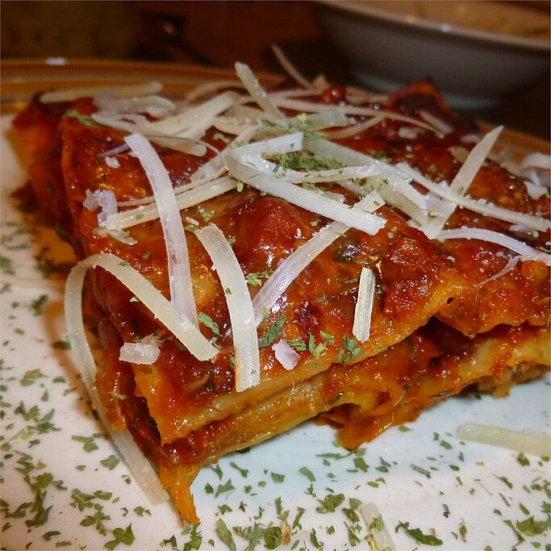

Sausage and Zucchini Lasagna

Description
A very filling twist on a traditional lasagna.
Ingredients
- ¼ cup spaghetti sauce
- 1 tablespoon vegetable oil
- 1 pound bulk pork sausage
- 2 zucchini, quartered and sliced
- 1 pound ricotta cheese
- 8 ounces shredded mozzarella cheese
- ¼ cup grated Parmesan cheese
- 6 no-boil lasagna noodles, or more if needed
- 2 cups spaghetti sauce, divided
- ½ cup grated Parmesan cheese
- Preheat oven to 350 degrees F (175 degrees C). Pour about 1/4 cup of spaghetti sauce into the bottom of a 9x13-inch baking dish.
- Heat vegetable oil in a large skillet over medium heat; cook and stir the sausage and zucchini until the meat is no longer pink and the zucchini pieces are tender, 10 to 12 minutes. Drain excess fat from the skillet, and set the sausage mixture aside. While the sausage and zucchinis are cooking, mix together the ricotta cheese, egg white, mozzarella cheese, and 1/4 cup of Parmesan cheese in a bowl until well combined.
- Place 3 lasagna noodles into the bottom of the baking dish on top of the spaghetti sauce, overlapping noodles slightly if necessary. Spread half the sausage-zucchini mixture on top of the noodles. Spread half the cheese mixture over the meat and zucchini, and pour 1 cup of spaghetti sauce evenly over the cheese mixture. Spread the sauce over the cheese mixture with a spoon or spatula. Repeat layers, starting with 3 more noodles, the rest of the sausage mixture, the rest of the cheese mixture, and 1 more cup of spaghetti sauce. Sprinkle the top with 1/2 cup of Parmesan cheese.
- Bake in the preheated oven until the lasagna is bubbling and the Parmesan cheese has browned, about 45 minutes.